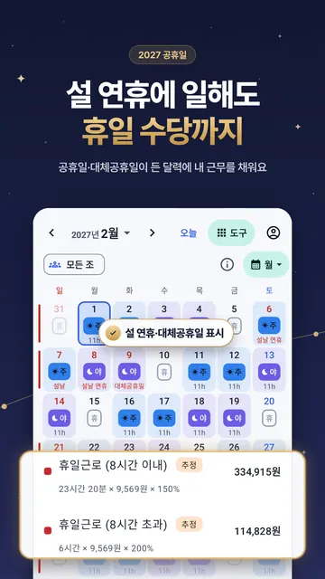

2026년 공휴일 22일 · 대체공휴일 포함, 그중 월~금 16일 · 지난 날은 흐리게
| 1월 1일 (목) | 신정 |
|---|---|
| 2월 16일 (월) | 설날 연휴 |
| 2월 17일 (화) | 설날 |
| 2월 18일 (수) | 설날 연휴 |
| 3월 1일 (일) | 삼일절 |
| 3월 2일 (월) | 대체공휴일 |
| 5월 1일 (금) | 노동절 |
| 5월 5일 (화) | 어린이날 |
| 5월 24일 (일) | 부처님오신날 |
| 5월 25일 (월) | 대체공휴일 |
| 6월 3일 (수) | 지방선거일 |
| 6월 6일 (토) | 현충일 |
| 7월 17일 (금) | 제헌절 |
| 8월 15일 (토) | 광복절 |
| 8월 17일 (월) | 대체공휴일 |
| 9월 24일 (목) | 추석 연휴 |
| 9월 25일 (금) | 추석 |
| 9월 26일 (토) | 추석 연휴 |
| 10월 3일 (토) | 개천절 |
| 10월 5일 (월) | 대체공휴일 |
| 10월 9일 (금) | 한글날 |
| 12월 25일 (금) | 성탄절 |
2026년 사흘 이상 연휴
- 2/14(토) ~ 2/18(수) · 5일 · 설날, 설날 연휴
- 2/28(토) ~ 3/2(월) · 3일 · 대체공휴일, 삼일절
- 5/1(금) ~ 5/3(일) · 3일 · 노동절
- 5/23(토) ~ 5/25(월) · 3일 · 대체공휴일, 부처님오신날
- 7/17(금) ~ 7/19(일) · 3일 · 제헌절
- 8/15(토) ~ 8/17(월) · 3일 · 광복절, 대체공휴일
- 9/24(목) ~ 9/27(일) · 4일 · 추석, 추석 연휴
- 10/3(토) ~ 10/5(월) · 3일 · 개천절, 대체공휴일
- 10/9(금) ~ 10/11(일) · 3일 · 한글날
- 12/25(금) ~ 12/27(일) · 3일 · 성탄절
교대 근무자라면: 공휴일에 나는 쉬나, 일하나
교대 근무는 공휴일과 상관없이 순서대로 돌아요. 근무 순서와 첫날을 넣으면 2026년 공휴일 중 내가 쉬는 날과 일하는 날(휴일 근로 수당이 붙을 수 있는 날)을 나눠 보여 줘요.

자주 묻는 것
2026년 공휴일은 며칠인가요?
관공서의 공휴일에 관한 규정과 한국천문연구원 월력요항 기준으로 대체공휴일까지 22일이에요(일요일과 겹친 날 포함, 그중 월~금 16일). 임시공휴일이 정해지면 고쳐요.
민간 회사도 공휴일에 쉬나요?
상시 5명 이상 사업장은 공휴일이 유급휴일이에요(근로기준법 제55조 제2항). 쉬는 날에 일하면 휴일 근로 수당(8시간까지 50%)을 받아요. 교대 근무는 대체휴일 합의가 있으면 다른 날 쉬기도 해요.
5월 1일 노동절(근로자의 날)도 쉬나요?
5월 1일은 법으로 정한 유급휴일이라 근로자는 쉬고, 일하면 휴일 근로 수당을 받아요.
공휴일 근무 알람을 따로 맞춰야 하나요?
밤낮 앱은 공휴일을 달력에 표시하고, 근무 순서대로 근무 알람을 울려요. 쉬는 날엔 알람이 조용해요.